请访问原文链接：在 Apple Silicon Mac 上 DFU 模式恢复 macOS 固件，查看最新版。原创作品，转载请保留出处。
作者主页：www.sysin.org
抄袭者 macz、qq_23930765、hanzheng260561728 请远离本站！！！
2021.11.28 更新：增加了新机型 2021 款搭载 Apple 芯片的 14 英寸或 16 英寸 MacBook Pro。
2021.05.25 更新：增加了新机型 iMac (24 英寸, M1, 2021 年) 相关内容。
1. 了解 Apple Slicon Mac 在系统启动与固件上的差异
与 Intel 芯片的 Mac 相比，Apple 芯片 Mac 在系统和固件方面有一定的变化。
1.1 macOS Recovery 启动方式不同
- Apple 芯片：将 Mac 开机并继续按住电源按钮，直至看到启动选项窗口 (sysin)，其中包含一个标有 “选项”（Option）字样的齿轮图标。选择 “选项”，然后点按 “继续”。
- Intel 处理器：确保您的 Mac 已连接到互联网。然后，将 Mac 开机并立即按住 Command (⌘) + R，直至看到 Apple 标志或其他图像。
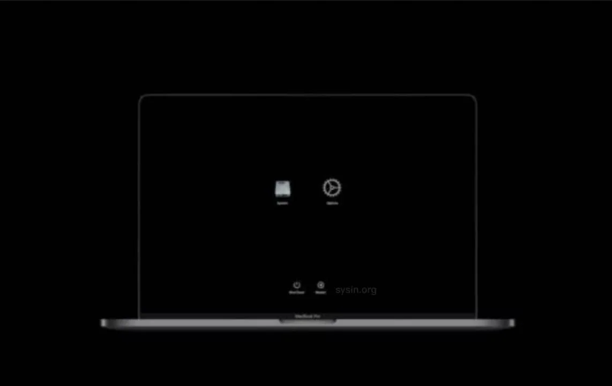
Apple Silicon Mac 启动管理器
1.2 Apple Silicon System Recovery（新特性）
Apple Silicon System Recovery 是除了 macOS Recovery 之外的一个新的隐藏恢复选项。如果由于某种原因 macOS Recovery 损坏，System recovery 将与 macOS Recovery 相同的方式加载 (sysin)。您可以使用它重新安装 macOS 和 macOS Recovery。
如果 macOS 和 System Revovery 都被破坏：如果您的 Mac 在启动时出现一个圆圈围绕的感叹号
1.3 Internet Recovery 已废弃
-
Apple 芯片：不存在
-
Intel 处理器：
Option-Command-R： 通过互联网从 macOS 恢复启动。使用此按键组合来重新安装 macOS 并升级到与您 Mac 兼容的最新版本 macOS。
Option-Shift-Command-R： 通过互联网从 macOS 恢复启动。使用此按键组合来重新安装随 Mac 预装的 macOS 版本或仍可用的最接近版本。
1.4 Mac Sharing Mode（共享磁盘模式）替代了 Target Disk Mode（目标磁盘模式）
注意：建议使用雷雳连接线，否则速度堪忧。
-
Apple 芯片：长按电源键进入 “选项” > 进入恢复模式 > 菜单 “实用工具” > “共享磁盘”。
链接：在搭载 Apple 芯片的 Mac 和另一台 Mac 之间传输文件
-
用 USB、USB-C 或雷雳线缆将两台电脑连接起来。
-
在搭载 Apple 芯片的 Mac 上，选取苹果菜单 > “关机”。
-
按住电源按钮直至 “正在载入启动选项” 出现。
-
点按 “选项”，然后点按 “继续”。
如有要求，请输入管理员帐户的密码。
Mac 将以恢复模式打开。
-
选取 “实用工具” > “共享磁盘”。
-
选择要共享的磁盘或宗卷，然后点按 “开始共享”。
-
在另一台 Mac 上，打开 “访达” 窗口，然后点按边栏中的 “网络”（在 “位置” 下方）。
-
在 “网络” 窗口中，连按含共享磁盘或宗卷的 Mac，点按 “连接身份”，在 “连接身份” 窗口中选择 “客人”，然后点按 “连接”。
-
传输文件。
-
文件传输完成后，推出另一台 Mac 上的磁盘。
-
-
Intel 处理器：同时按住电源键和 T 键。
-
用 FireWire 或雷雳线缆将两台电脑连接起来。
-
在要以目标磁盘模式用作磁盘的 Mac 上，请执行以下一项操作：
-
如果电脑关闭，则在按住 T 键的同时启动它。
-
如果电脑已开机，请选取苹果菜单 > “系统偏好设置”，点按 “启动磁盘”，然后点按 “目标磁盘模式”。
当电脑启动后，就会在另一台电脑的桌面上出现一个磁盘图标。
-
-
您可以将文件拖入或拖出磁盘来传输它们。
-
将磁盘图标拖移到废纸篓，将其推出。
在拖移时，废纸篓图标会变为 “推出” 图标。
-
在用作磁盘的 Mac 上，按下电源按钮将它关闭，然后断开电缆连接。
-
1.5 安全模式（启动方式不同）
-
以安全模式启动搭载 Intel 芯片的 Mac
-
在 Mac 上，选取苹果菜单 > “关机”。
Mac 关机后，等待 10 秒钟。
-
重新启动 Mac，然后立即按住 Shift 键。
-
看到登录窗口时松开 Shift 键。
-
-
以安全模式启动搭载 Apple 芯片的 Mac
-
在 Mac 上，选取苹果菜单 > “关机”。
Mac 关机后，等待 10 秒钟。
-
按住电源按钮直至启动磁盘和 “选项” 出现。
-
按住 Shift 键，然后在安全模式中点按 “继续”。
-
1.6 Apple Silicon Mac “外部启动” 默认开启
-
Apple 芯片：在搭载 Apple 芯片的 Mac 上更改安全性设置。
-
Intel 处理器：打开 “启动安全性实用工具”
1.7 macOS IPSW 软件包
没错，就像 iOS，Apple Slicon Mac 可以通过 IPSW 文件进行固件恢复和更新（通过 Apple Configurator 2）。
1.8 DFU 模式
DFU 的全称是 Device Firmware Upgrade，即 iOS 固件的强制升降级模式。Apple Slicon Mac 同样可以启动到 DFU 模式。
如何启动到 DFU 模式，将在下文 “步骤 2：准备目标 Mac” 描述。
1.9 系统版本是否可以降级？
Apple Slicon Mac 的 macOS 版本仍然可以降级。
默认启用 “完整安全性”（等于 iOS），需要将安全策略设置为 “降级安全性”，详见：在搭载 Apple 芯片的 Mac 上更改启动磁盘的安全性设置。
对比参看：关于搭载 Apple T2 安全芯片的 Mac 上的“启动安全性实用工具”
2. 了解 Apple Slicon Mac 恢复系统的方式
- 1. macOS Recovery
- 2. System Recovery – (如果 macOS Recovery 不可用，将自动启动)
- 3. macOS Big Sur USB 启动安装 – (“外部启动” 默认开启，操作方式 并无变化，除了引导安装器的按键不同)
- Intel 处理器：将 Mac 开机或重新启动后，立即按住 Option (Alt) ⌥ 键。出现可引导宗卷的黑屏时，松开 Option 键。
- Apple 芯片：将 Mac 开机并继续按住 电源按钮，直到看到启动选项窗口，其中会显示可引导宗卷。
- 4. Apple Configurator 2 REVIVE（修复）选项 – 将修复固件并重新安装 macOS Recovery（更新固件并将 recoveryOS 更新到最新版本），用户数据仍然保留在 SSD 中
- 5. Apple Configurator 2 RESTORE（恢复）选项 – 将重新安装 macOS Recovery, 将抹掉整个磁盘重新安装 macOS，当然用户数据也会抹掉
本文用于描述使用 Apple Configurator 2 恢复系统。
3. 了解 Apple Silicon 机型
本任务适用以下搭载 Apple 芯片的 Mac 电脑：
- MacBook Pro（14 英寸，2021 年）
- MacBook Pro（16 英寸，2021 年）
- iMac（24 英寸，M1，2021 年）
- Mac mini（M1，2020 年）
- MacBook Air（M1，2020 年）
- MacBook Pro（13 英寸，M1，2020 年）
4. 准备和要求
-
一台额外的 Mac，我们这里称之为 “主 Mac” (sysin)，配备 Type-C 接口，Intel 芯片和 Apple 芯片都可以。
-
系统版本 macOS Catalina 10.15.6 及以上。
-
下载 IPSW（建议），macOS Big Sur IPSW 下载，当然也同样适用于 macOS Monterey。
Apple Configurator 2 将自动下载最新版 ipsw 固件（类似 iOS），推荐下载到本地（可以指定版本），直接拖拽到 Apple Configurator 2 中进行恢复。
-
USB-C to USB-C Cable：支持的 USB-C 转 USB-C 充电线，如 由 Apple 售卖的产品。雷雳连接线 更佳。
-
线缆的连接：“主 Mac” 可以任意 C 口，目标 Mac（要被恢复的 Mac）必须是指定 C 口（详见下文描述）。
-
确保 “主 Mac” 已插入电源或者电池电量充足，有效的互联网连接。
5. 步骤 1：连接 USB-C 线缆并在 “主 Mac” 上打开 Apple Configurator 2
-
确保您的 “主 Mac” 已插入电源且已开机，连接 Type-C 线缆（任意口）。
-
插入 USB-C 线缆到目标 Mac（要被恢复的 Mac）的指定 C 口。
搭载 Apple 芯片的 14 英寸或 16 英寸 MacBook Pro 的左侧，显示靠后的两个雷雳 4 (USB-C) 端口，其中标出了最左侧的端口。
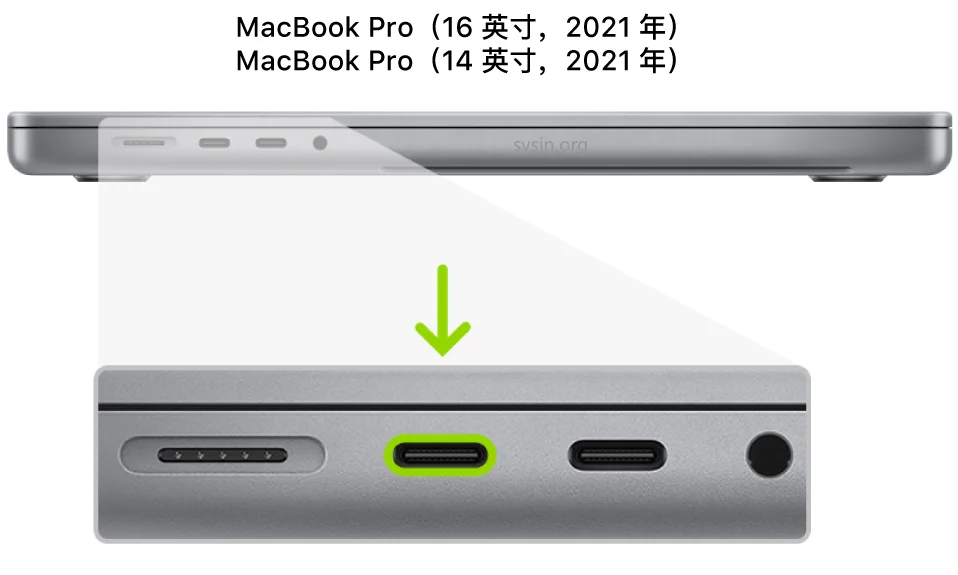
iMac（24 英寸，M1，2021 年）的背面，显示靠后的两个雷雳 3 (USB-C) 端口，其中标出了最右侧的端口。
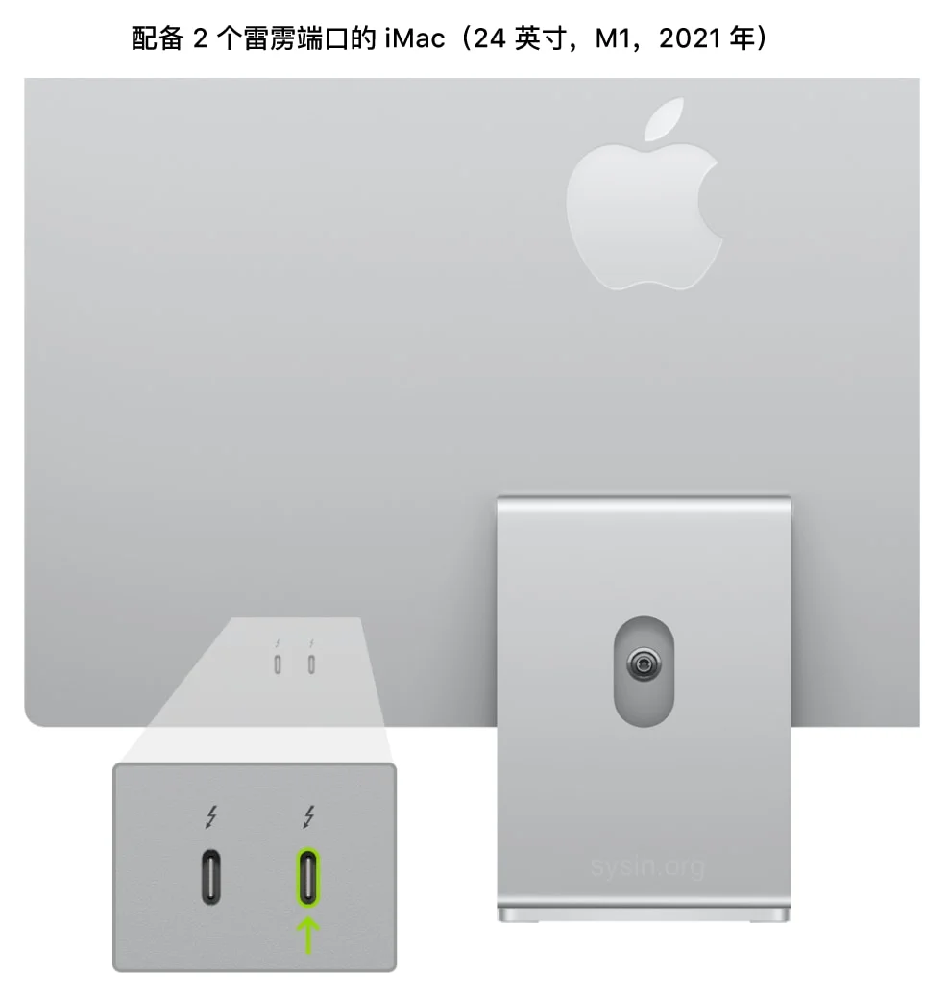
iMac（24 英寸，M1，2021 年）的背面，显示靠后的四个雷雳 3 (USB-C) 端口，其中标出了最右侧的端口。
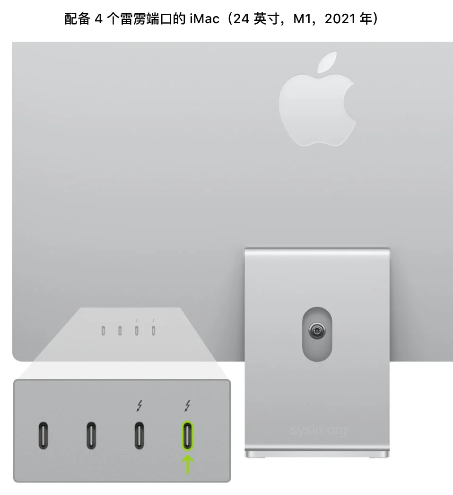
图像显示用户应该选择搭载 Apple 芯片的 Mac mini 上离以太网端口最近的端口。
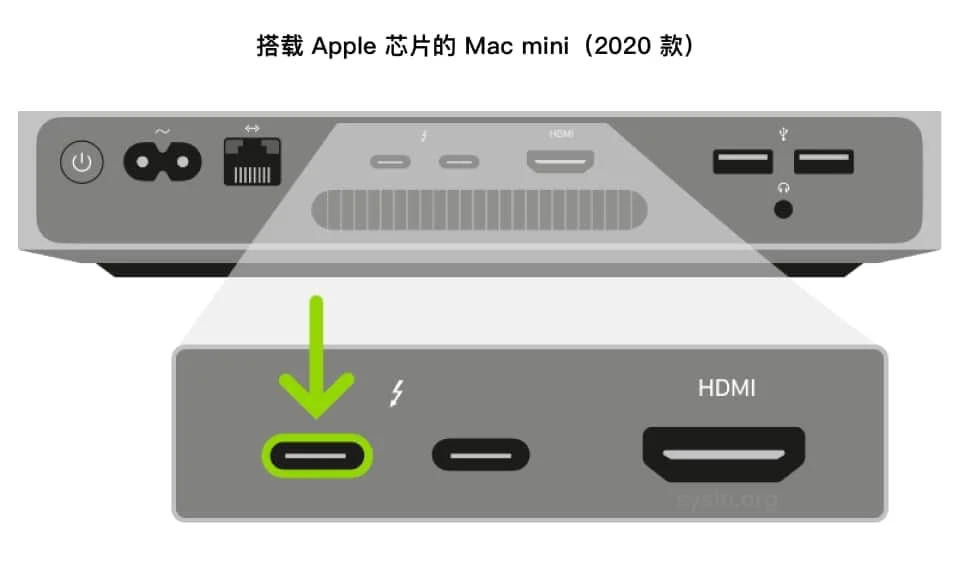
图像显示用户应该选择与搭载 Apple 芯片的 MacBook Pro 左侧显示器距离最近的端口。
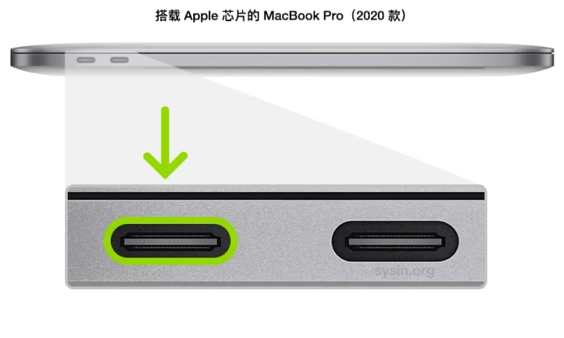
图像显示用户应该选择与搭载 Apple 芯片的 MacBook Air 左侧显示器距离最近的端口。
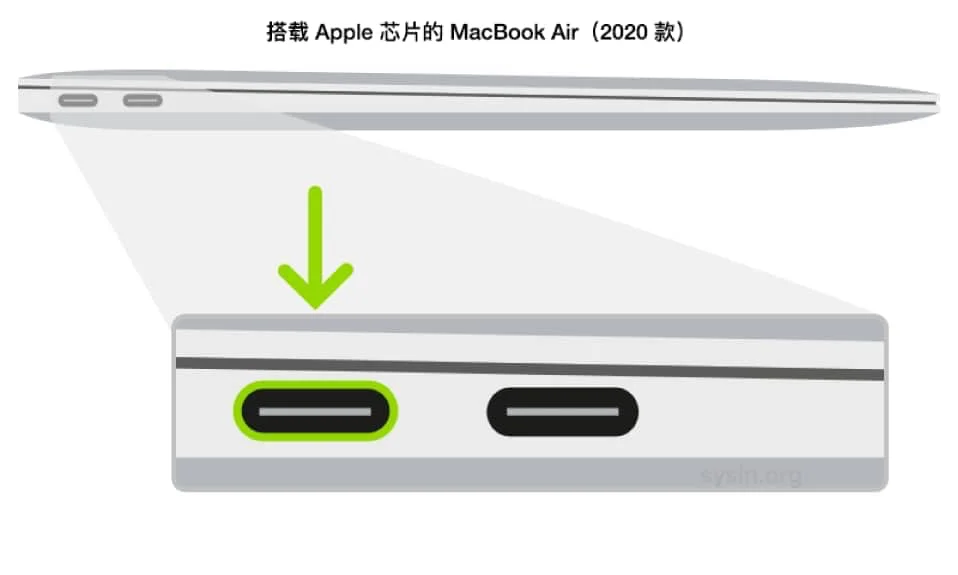
-
在 “主 Mac” 上启动 Apple Configurator 2。
6. 步骤 2：准备目标 Mac（被恢复的 Mac）
6.1 准备 iMac（24 英寸，M1，2021 年）（进入 DFU 模式）
-
按下电源按钮。
-
按住电源按钮的同时，按下以下所有三个按键大约 10 秒钟：
- 右 Shift 键
- 左 Option 键
- 左 Control 键
-
10 秒钟后，立即松开这三个按键但继续按住电源按钮，直至 Apple Configurator 2 中出现 DFU 图标。
【注】 在您要修复或恢复的 iMac（24 英寸，M1，2021 年）上不会出现任何屏幕活动。
6.2 准备 Mac mini（进入 DFU 模式）
-
插入显示器以便查看恢复过程何时完成。
-
断开 Mac mini 的电源至少 10 秒钟。
-
按住电源按钮。
-
在按住电源按钮的同时重新连接电源。
-
松开电源按钮。
状态指示灯应该呈琥珀色。
*【注】*Mac mini 不会出现任何屏幕活动。
6.3 准备 MacBook Air 或者 Macbook Pro（进入 DFU 模式）
-
按下电源按钮。
-
按住电源按钮的同时，按下以下所有三个按键大约 10 秒钟：
- 右 Shift 键
- 左 Option 键
- 左 Control 键
-
10 秒钟后，立即松开这三个按键但继续按住电源按钮，直至设备出现在 Apple Configurator 2 中。
【注】 在您要尝试修复或恢复的 MacBook Air 或 MacBook Pro 上不会出现任何屏幕活动。如果 MacBook Pro 使用 MagSafe 接口，则没有 LED 充电指示灯。
6.4 验证状态
事实证明，让 Apple Silicon Mac 进入 DFU 模式并不那么容易。往往需要按照 Apple 的描述多尝试几次，如果无法进入 DFU 模式需要重新开始，以下几个要点请参考：
-
目标 Mac 必须关机才能开始。
-
同时按住 电源键、右 Shift 键、左 Control 键 和 左 Option 键 10 秒（看着打开 Apple Configurator 2 的画面计数，可以让电脑显示秒数）然后松开除电源键以外的所有键 (sysin)。继续按住电源按钮 8 秒，整个过程 18 秒。如果计数超过 20 秒并且没有看到 DFU 图标，需要重新尝试该过程。
-
当目标 Mac 正确启动到 DFU 模式时，Apple Configurator 2 中显示一个大的 DFU 图标（如下图）。此时可以松开电源按钮。
在 “主 Mac” 的 Apple Configurator 2 状态变化如下：
（1）目标 Mac 尚未启动到 DFU 模式，显示如下：
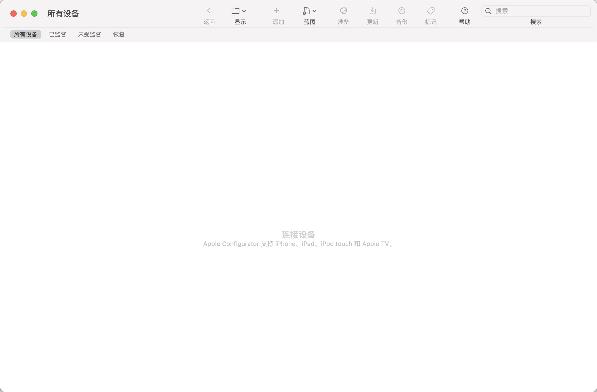
（2）目标 Mac 已经正确启动到 DFU 模式
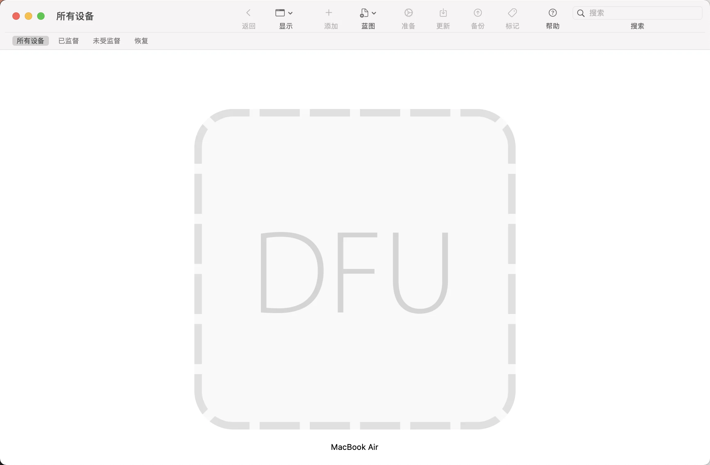
（3）目标 Mac 线缆连接正确，已经启动到了恢复模式选择窗口（仅供参考，这里不需要启动到该模式）

6.5 退出 DFU 模式
- 在 DFU 图标上点击右键，菜单 “高级”，选择 “重新启动设备” 或者 “关闭设备”
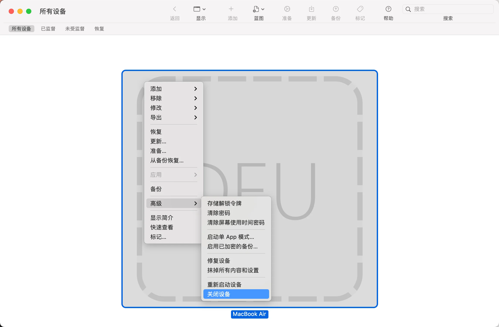
- 上述操作如果无效，长按电源按钮（超过 4 秒）即可关闭设备并退出 DFU 模式。
- 恢复操作成功后会自动退出 DFU 模式。
7. 步骤 3：拖拽 IPSW 文件到 DFU 画面进行恢复
请将下载的 macOS IPSW 文件拖拽到 DFU 图标上开始恢复。
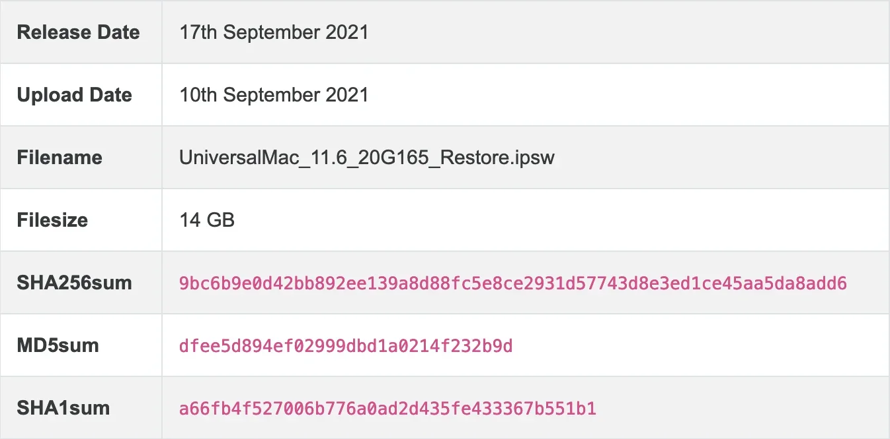
拖拽 macOS IPSW 文件后，会弹出提示框，选择 “恢复”（“Restore”) 将抹掉磁盘重新安装 macOS，整个过程大约需要 15 分钟。
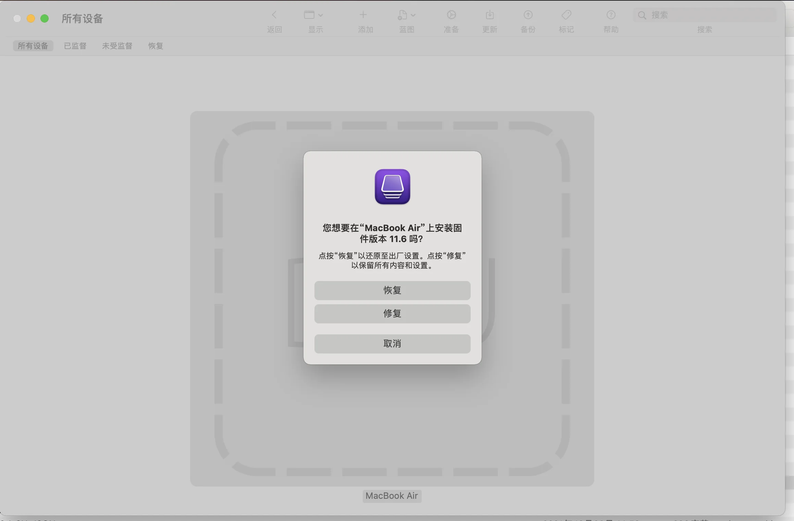
弹出提示画面，选择 “恢复”（“Restore”)，还原至出厂设置。（当然也可以点击 “修复”，保留所有内容和设置）
如果你没有下载 IPSW（或者不知道哪里手动下载 IPSW），直接查看下面的 “替代步骤 3”
8. 替代步骤 3：修复或者恢复固件（无需准备 IPSW，自动联网下载）
选项 1：修复（Revive）固件并安装最新的 recoveryOS
-
在 Apple Configurator 2 的设备窗口中，选择要修复其芯片固件并将其 recoveryOS 更新到最新版本的 Mac。
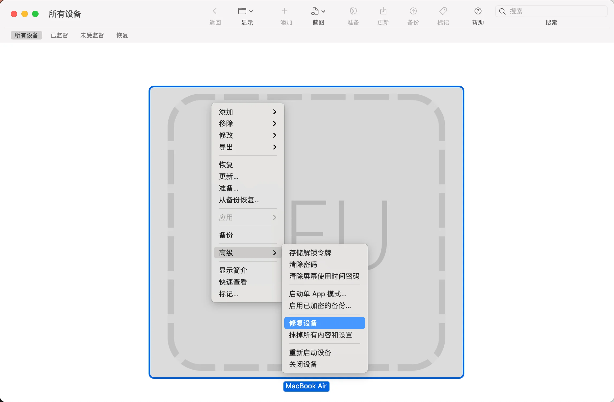
-
请执行以下一项操作：
-
选取 “操作” > “高级” > “修复设备”，然后点按 “修复”。
-
按住 Control 键点按所选设备并选取 “高级” > “修复设备”，然后点按 “修复”。
【注】 如果在此过程中任意一台 Mac 电量耗尽，请再次开始修复过程。
-
-
等待过程完成。在此过程中，Apple 标志会出现和消失。
-
修复过程完成后，Mac 会重新启动。
【重要事项】 修复固件时，必须确认已成功修复，因为 Apple Configurator 2 可能不会提醒您。
-
退出 Apple Configurator 2，然后拔下任何适配器和线缆。
选项 2：恢复（Restore）固件、抹掉所有数据并重新安装最新版本的 recoveryOS 和 macOS
-
在 Apple Configurator 2 的设备窗口中，选择要恢复的 Mac。
-
请执行以下一项操作：
-
选取 “操作” > “恢复”，然后点按 “恢复”。
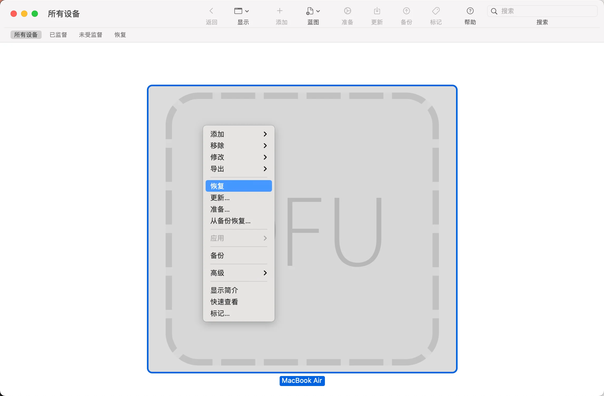
-
按住 Control 键点按所选设备并选取 “操作” > “恢复”，然后点按 “恢复”。
【注】 如果在此过程中任意一台 Mac 电量耗尽，请再次开始恢复过程。
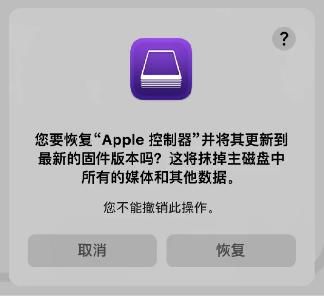
-
-
等待过程完成。在此过程中，Apple 标志会出现和消失。
-
恢复过程完成后，Mac 会重新启动。
【重要事项】 恢复 Mac 时，必须确认已成功恢复，因为 Apple Configurator 2 可能不会提醒您。
-
如果恢复成功，将显示 macOS 设置助理。
-
退出 Apple Configurator 2 并拔下任何适配器和线缆。
9. 题外话
使用 Apple Configurator 2 修复搭载 Intel 芯片的 Mac 的差异：
-
目标 Mac 使用右侧的 USB-C。
-
默认仅有 “修复” 选项，将固件和 recoveryOS 更新的最新版本（但有一个例外）。
-
仅限 Mac Pro（2019 年）：恢复固件、抹掉所有数据并重新安装最新版本的 recoveryOS 和 macOS。
促销信息：
>> 阿里云：新用户2核2G仅需9元/月，1核2G云服务器仅需87元/年（限时优惠，不定期更新）
>> 腾讯云：1核2G云服务器首年50元，爆款2核4G带宽8M只要74元/年（限时优惠，不定期更新）
如果文章中使用的内容或图片侵犯了您的版权，请联系作者删除。如果您喜欢这篇文章或者觉得它对您有所帮助，欢迎您发表评论，也欢迎您分享这个网站，或者赞赏一下作者，谢谢！
 支付宝赞赏
支付宝赞赏
 微信赞赏
微信赞赏
赞赏一下